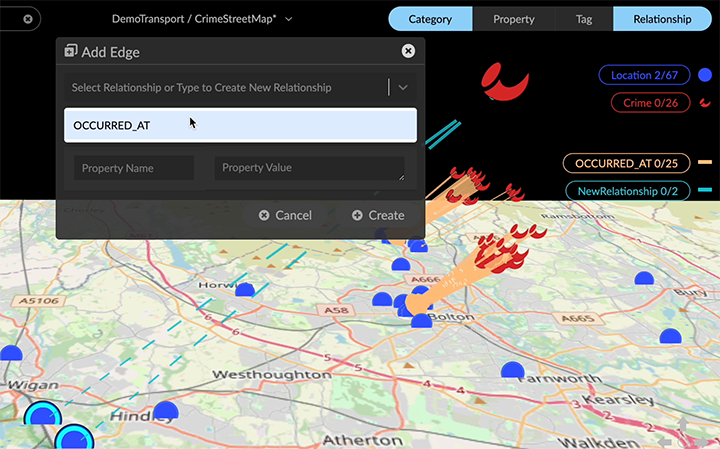

Add and Edit Graph Data At any time you can manually add nodes and edges of new or existing categories and relationships in the project space. To show Add Node or Add Edge dialogs, you can click the respective toolbar icons or use the right-click menu. You can also create new properties and add their values to nodes or edges, and edit existing property values. Often, you only enter one value for a property. However, GraphXR does allow entry of multiple values for a single property. These multiple property values can be displayed as captions, on separate lines. You can also add a node without including any properties, to match a situation allowed in Neo4j. Adding a node The Add Node dialog lets you add new nodes directly in GraphXR, one at a time. You can add a node of a Category by click and drag. In the Project>Category tab, click a category pill and drag to the project space to create one node. The Add Node dialog opens, and you can enter property values for the node, then click Create or Cancel. To add a node: In the context menu, click the Add Node icon to display the Add Node dialog. Use the dropdown menu to select an existing category for the added node, or enter a new category name (e.g. Pets), then press return. For example, we notice that a person owns pet dogs called Harry and Rufus. Our data doesn’t yet include anything about animal roles. For each pet, we can quickly add a node (and, for the first one, create a new Pets category with initial properties such as the name, owner, age, url image, species, breed, and colors of the pet). Enter one or more Property Names for the category (e.g. petName, etc.), and enter its corresponding Property Value (e.g. Harry) or values (e.g. black and gray). To enter multiple values, enter the first value then press return to enter the next one, and so on. OR In the list of properties for an existing category, enter a Property Value if you have one, add any additional property names and their values, and click the minus (-) icon for properties for which you have no value. The other nodes of an existing category will be updated with any new property names you add, but the values will be null. If you want to add values for a property you’ve added, you can inspect a Table for missing values, and enter a value for another node using its Information window (Ctrl+I). To enter values for multiple nodes at once, you can use f(x) or Aggregate transforms. Click Create to create the node. The new node appears in the project space. A new category will appear in the Category list in the legend. For an existing category, the total number of nodes is updated. Adding edges In the Add Edge dialog you can create new edges that connect selected nodes to each other via a new or existing directed relationship. You can add properties and single or multiline property values to edges just as you can for nodes. An easy edge feature lets you select one or more nodes, then use Ctrl-drag to select a target node When the target is selected, dashed lines appear between the nodes. The Add Edge dialog opens, and you can select an existing relationship or create a new one, then click Create or Cancel.  To add edges to nodes: Using any selection method, select one or more nodes that you want to connect to other nodes via a directed relationship. Click the Add Edge icon, select Add Edge from the right-click menu, or use Ctrl-drag to select a single target node. In the Add Edge dialog, either enter the name of a new relationship to be assigned to the new edges (e.g. OWNED_BY) and press return, or select an existing relationship from the dropdown menu. Optionally, enter property names and their values for the relationship. Click as Source to list the nodes that will be sources for new edges. Now select one or more target nodes for the edges and click as Target. If you’ve set the source and target backwards, click the Switch button to reverse the two. Click Create. New edges are created connecting the source nodes to the target nodes, with arrows showing the direction of the relationship. The total number of edges of that relationship is updated in the Relationship list in the legend. Adding new properties to a single node or edge You can add one or more new properties to a single node or edge using the Add Property button in its Info window. Adding properties and their values to one node or edge at a time in GraphXR is impractical for large amounts of data. It can be useful for modeling and testing very small amounts of data, or for adding a small number of missing properties and their values. For example, we can add a property for a mobile number to the following Customer node that includes name and aliases properties. Captions on the customer node are currently set to show the name and the aliases. Once the mobile number property is added, we can go to the Customer category in the Project panel and Category tab and select it as a caption instead (or in addition). To add a new property and property value: Select a single node or edge and double click to display its information window. Click the Add Property button, and enter a Property Name (mobile) and one or more Property Values (a mobile number) in the provided text fields. Click Save to save the new property and property value, or Cancel to exit without saving. The information window is updated with the new property and values. Once the mobile property is added, we can set it as the caption for Customer nodes. Editing a property value You can edit any existing property value of a single node or edge in its Info window. This might be useful to correct an error or add missing values to a small amount of data. To edit a property value: Select a single node or edge, and in the context menu, double click to display its information window. In the list of properties, double click a property Value, and edit the value (or values) in the provided text field. The property value is updated as you enter it. Click elsewhere in the list to save the new property value.